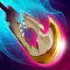

SKILL I · FIRST SKILL / OFFENSIVE DEBUFF
Strike of the Damned
Corvus attacks the enemy frontline, dealing Physical Damage while reducing Armor, Magic Defense and Dodge.
These reductions help different types of attackers. Physical damage dealers benefit from lower Armor, magical attackers from lower Magic Defense, and Dodge reduction helps eligible attacks connect more reliably.
Eternity scaling: Damage and defensive reductions increase by 10% for every allied Eternity hero. More Eternity allies directly strengthen this skill.